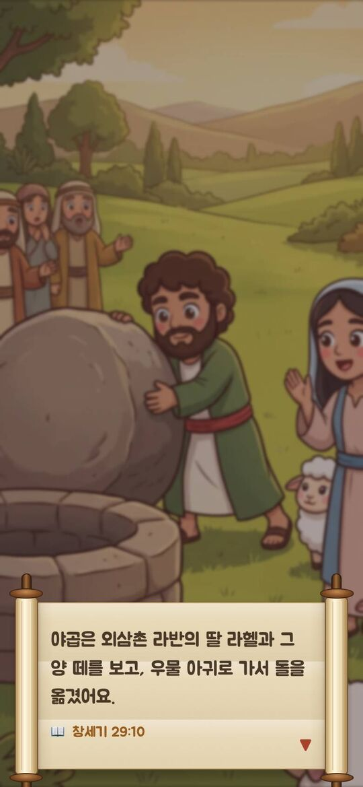

하하하
바이블 탐험
하양이와 함께 떠나는 성경 여행
App Store · Google Play 출시 준비 중 · 시즌 1 무료
성경 속을 직접 걸어요
「하하하 바이블 탐험」은 어린이가 성경 이야기를 읽기만 하는 것이 아니라, 어린 양 하양이와 함께 이야기 속을 직접 걷고, 돕고, 고르며 경험하도록 만든 게임이에요. 시즌 1에서는 천지창조부터 요셉까지 창세기 전체를 26개 이야기로 여행해요.





시즌 1 · 창세기 (창세기 1–50장)
창세기의 흐름을 따라 네 부분으로 나눴어요. 이야기는 성경 순서대로 하나씩 열려요.
1부 · 태초
- 1. 천지창조아무것도 없던 곳에 하나님이 빛과 하늘과 땅을 만드셨어요. 일곱 날 동안 하나님이 하신 일을 보아요.
창세기 1:1–2:3 - 2. 에덴동산아담과 함께 아름다운 동산을 가꾸고, 동물들에게 이름을 지어 줘요.
창세기 2장 - 3. 선악과와 첫 약속뱀의 거짓말과 하와의 선택. 하나님은 말씀을 어긴 사람들에게도 구원의 약속을 주셨어요.
창세기 3장 - 4. 가인과 아벨양을 치는 아벨과 농사짓는 가인. 두 형제가 하나님께 드린 예물과, 화난 마음을 다스리는 이야기.
창세기 4장 - 5. 노아의 방주노아 할아버지와 방주를 짓고 동물들을 태워요. 그리고 무지개 약속!
창세기 6–9장 - 6. 바벨탑하늘까지 닿는 탑을 쌓아 이름을 높이려던 사람들. 하나님은 사람들의 말을 뒤섞으셨어요.
창세기 11:1–9
2부 · 아브라함
- 7. 아브라함의 부르심"너는 고향을 떠나 내가 보여 줄 땅으로 가라." 낙타 행렬과 함께 가나안까지 믿음의 여행을 떠나요.
창세기 12장 - 8. 롯에게 양보한 아브라함목자들이 다투자 아브라함은 조카 롯에게 먼저 땅을 고르게 했어요. 붙잡혀 간 롯도 구해 내요.
창세기 13–14장 - 9. 하늘의 별을 세어 보라셀 수 없이 많은 밤하늘의 별처럼 자손을 주시겠다는 약속. 아브라함은 하나님을 믿었어요.
창세기 15장 - 10. 하갈과 이스마엘광야에서 물이 떨어진 하갈과 아이. 하나님은 우는 소리를 들으시고 샘을 보여 주셨어요.
창세기 16장, 21:8–21 - 11. 세 손님과 사라의 웃음장막을 찾아온 세 손님을 대접해요. 내년 이맘때 아들을 주시겠다는 약속에 사라가 웃었어요.
창세기 17–18장 - 12. 소돔에서 탈출한 롯소돔을 위해 기도한 아브라함. 천사의 손을 잡고 뒤돌아보지 말고 산으로 달려요!
창세기 18:16–19:29 - 13. 이삭과 여호와 이레약속대로 태어난 웃음의 아들 이삭. 모리아 산에서 하나님은 숫양을 준비해 두셨어요.
창세기 21–22장 - 14. 리브가와 우물이삭의 아내를 찾으러 간 늙은 종의 기도. 낙타 열 마리에게 물을 길어 준 리브가!
창세기 23–24장
3부 · 이삭과 야곱
- 15. 팥죽 한 그릇쌍둥이 형제 에서와 야곱. 배고픈 에서는 팥죽 한 그릇에 장자의 명분을 팔았어요.
창세기 25:19–34 - 16. 다투지 않은 이삭의 우물우물을 빼앗길 때마다 이삭은 다투지 않고 옮겨 가서 다시 팠어요. 하나님이 넓은 곳을 주셨어요.
창세기 26장 - 17. 빼앗은 축복눈이 어두운 아버지를 속인 야곱. 거짓말이 가져온 슬픈 결과와 집을 떠나는 길.
창세기 27장 - 18. 야곱의 사다리혼자 도망가던 밤, 돌베개를 베고 잠든 야곱. 꿈속에서 하늘에 닿은 사다리를 보았어요.
창세기 28장 - 19. 라반의 집에서우물가에서 만난 라헬. 야곱은 칠 년씩 양 떼를 돌보며 일했고, 하나님은 고향으로 돌아가라 하셨어요.
창세기 29–31장 - 20. 얍복 강과 형과의 화해형을 만나기 전날 밤 얍복 강가에서 씨름한 야곱. 새 이름 이스라엘, 그리고 형과 끌어안은 날.
창세기 32–33, 35장
4부 · 요셉
- 21. 요셉의 꿈과 채색옷아버지가 지어 준 채색옷과 이상한 꿈. 형들을 찾아간 요셉은 구덩이에 던져지고 애굽으로 팔려 가요.
창세기 37장 - 22. 보디발의 집과 감옥종이 되어도, 억울하게 감옥에 갇혀도 하나님이 요셉과 함께하셨어요. 두 관원의 꿈을 풀어 줘요.
창세기 39–40장 - 23. 바로의 꿈과 칠 년 풍년일곱 마리 소와 일곱 이삭의 꿈. 총리가 된 요셉과 함께 풍년 동안 곡식을 창고에 모아요.
창세기 41장 - 24. 곡식을 사러 온 형들흉년에 애굽으로 곡식을 사러 온 형들. 요셉은 형들이 정말 달라졌는지 알아보아요.
창세기 42–44장 - 25. 내가 요셉이에요"내가 요셉이에요!" 울며 형들을 끌어안은 요셉. 수레를 보내 아버지 야곱을 모셔 와요.
창세기 45–47장 - 26. 야곱의 축복과 요셉의 용서열두 아들을 축복한 야곱. "형들은 해하려 했지만 하나님은 선으로 바꾸셨어요." 창세기의 마지막 이야기.
창세기 48–50장
이런 점이 좋아요
- 모든 이야기에 그 장면에서 가져온 액션 게임이 있어요. 방주 짓기, 별 세기, 소알까지 달리기, 낙타에게 물 길어 주기처럼요. 한 번 해 본 게임은 바이블 맵에서 언제든 다시 할 수 있어요.
- 이야기를 끝까지 보면 성경 퀴즈로 내용을 되짚고 별을 받아요. 틀려도 정답과 성경 위치를 알려 줘요.
- 개역한글 말씀 카드를 이야기마다 한 장씩 모아요.
- 하나님의 말씀에는 성경 본문 위치(예: 창세기 6장 18절)를 함께 보여 줘요.
- 동화책 같은 손그림 원화와 컷신, 인물들의 목소리가 이야기를 들려줘요. 배경음악, 효과음, 목소리는 따로 끌 수 있어요.
- 글자는 화면을 눌러야 넘어가서 천천히 읽을 수 있어요.
- 하나님은 사람 모습으로 그리지 않고 빛으로 표현했어요. 무서운 장면 없이 어린이 눈높이로 만들었어요.
부모님과 선생님께
바이블 맵의 "부모님 · 선생님" 화면(어른 확인 후 열림)에서 이야기마다 본문, 핵심 내용, 아이와 나눌 질문 두 가지를 볼 수 있어요. 설명이 필요한 장면에는 지도할 때 살펴볼 점도 적어 두었어요. 주일학교 공과와 함께 활용해 보세요.
- 광고가 없어요.
- 개인정보를 모으지 않아요. (개인정보 처리방침)
- 인터넷 없이도 할 수 있어요.
앞으로의 여행
성경 전체를 하나로 이어지는 큰 이야기로 따라가요. 시즌 1은 무료이고, 다음 시즌들은 차례로 준비하고 있어요.
- 시즌 2 · 출애굽과 광야 (출애굽기–신명기) 준비 중
- 시즌 3 · 약속의 땅 · 시즌 4 · 왕국 · 시즌 5 · 포로와 소망
- 시즌 6 · 예수님 · 시즌 7 · 교회 · 시즌 8 · 새 하늘과 새 땅